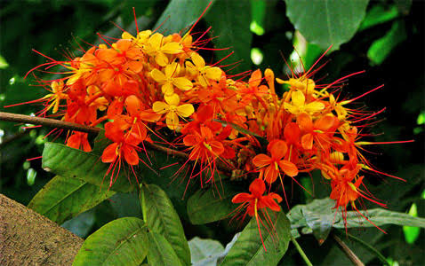

Basonym of Drug
Ashoka
Main Synonym
- Nata
- Tamrapallav
- Hemapushpa
- Vanjula
- Kankeli
- Pindapushpa
- Gandhapushpa
Regional Name
- Bengali: Ashoka
- Gujarati: Ashoka
- Hindi: Ashoka
- Tamil: Ashogam
- Telugu: Ashoka chettu
Botanical Name
Saraca ashoka
Family
Caesalpinioideae
Classification (Gana)
- Acharya Charaka: Vedanasthapana, Kashayskandha
- Acharya Sushruta and Vagbhatta: Rodhradi Gana
External Morphology
15-20 meter high tree
Useful Parts
Stem bark, Seeds
Important Phytoconstituent
Tannins, Catechin, Catechol, Esters
Rasa Panchak
- Apakva Phala:
- Rasa: Tikta, Kashay
- Guna: Laghu, Ruksha
- Virya: Shita
- Vipaka: Katu
Action
Pittahara
Therapeutic Indication
- Krumighna (antihelmintic)
- Shoolaprashaman (pain reliever)
- Hridroga (heart diseases)
- Ashmari (for stone)
Therapeutic Uses
- Rakta Pradara - decoction of Ashoka bark with cow milk is beneficial for metrorrhagia.
- Ashmari - seed powder with water is useful.
- Krimi - bark decoction is also useful as an antihelmintic.
Dose
Decoction - 50-100 ml, Seed powder - 3-6 gm
Formulations
- Ashokarista
- Ashoka Ghritam
Adverse Effect
Not Known